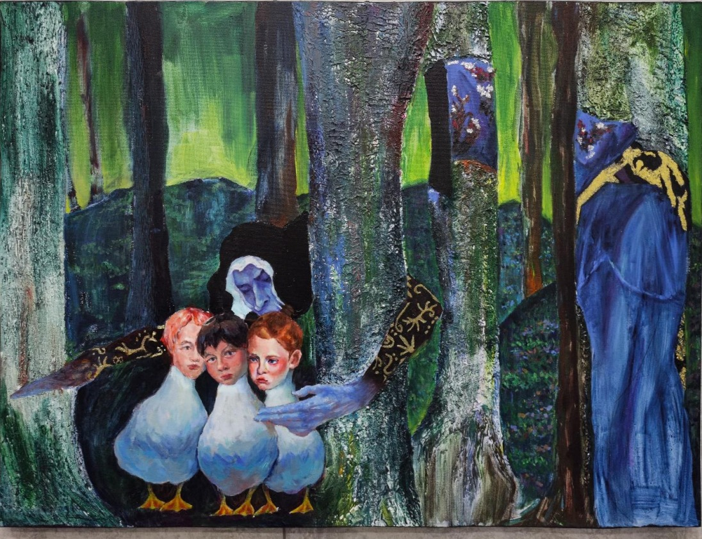

个人艺术作品集PAINTING / INSTALLATION / MOVING IMAGE
Between the seen
& the felt.
在看见与感受之间，
寻找自我与世界的关系。

VEILED GAZE 绘画与雕塑现实、记忆与想象的交界处。SELECTED WORKS
作品选集
PAINTING, OBJECTS & STORIES关于艺术实践
让看不见的感受，
拥有可见的形状。
王佳钰的创作横跨绘画、装置与影像，以人物、物件与空间构建叙事。作品从自我与家庭的经验出发，延伸至个体之间的疏离、社会阶层与生态环境，通过超现实的形象与材料实验，探索感知背后的情绪与关系。